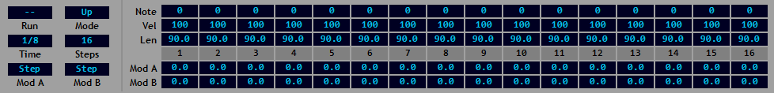

The Sequencer¶
The sequencer is located in the lower panel page accessed by the SEQ link:
The sequencer is activated by clicking the Run button. Once it is running any keys pressed will be played individually according to the settings in the controls on the left of the panel.
The actual notes played are determined by the sequencer grid. This takes each key being pressed and translates it into a new note according to the settings in the appropriate step of the grid. These settings are:
Note - an offset in semitones to be applied to the key to create the actual note played.
Vel - the velocity applied to the note played.
Len - the length of the note as a percentage of the step length.
Mod A/B - two independent modulation values to be applied through the modulation matrix for the duration of the step.
The Mod A & B values provide modulation sources for use via the modulation matrix. By default the values of Mod A & B remain fixed for the duration of each step with each value jumping to the next as each step is selected. If required the values can be ‘smoothed’ to create continuous modulation values by enabling the corresponding options in the context menu. When smoothed the outputs of Mod A & B will start each step at their assigned value but change gradually over the step to match the starting value of the next step.
The main playback controls are:
Mode - the order in which multiple notes are played.
Time - the duration of each step in the sequence in host tempo-based divisions.
Steps - the number of active steps in the sequence; steps beyond this limit are ignored.
Mod A/B - set the modulators to stepped or smoothed modulation.
Generally speaking the sequencer plays any combination of keys in the style of a traditional keyboard arpeggiator. Whenever keys are pressed the sequencer will play each one in turn in the order indicated by the mode. A single key will simply be repeated while two keys will be played repeatedly one after the other. In either case the mode setting makes no difference but becomes important once three or more keys are played. Here the keys will be played in ascending note order (up), descending note order (down) or both (up/down).
Whatever mode is in effect each note will be played against a step in the sequencer. As each note is selected the sequencer step is advanced by one and the corresponding settings applied to the note. Once the final step has been played it will return to step 1 and continue.
Note: the playback mode affects the order in which the keys being pressed are played. It has no effect on the sequencer playback which always plays left-to right.
Setting the velocity of a step to zero will create an empty step. No new note will be played and the currently selected note will remain selected for playback on the next non-empty step. This prevents played notes from being skipped when they are matched against an empty step in the sequencer. The Mod A and Mod B values are always applied even when there is no new note.
When playing in mono mode glide will be enabled for every step when glide mode is set to ‘All’. If glide mode is set to ‘Legato’ a step length of 100 can be used to simulate overlapping notes. The step set to 100 will be treated as though it overlaps the step following and glide will occur between the corresponding notes.
This simulated legato playback also applies to the retrigger behaviour defined by the Mono-Mode setting. When set to ‘Legato’ retriggering will not occur following a step where the length is set to 100.
Right-clicking the sequencer section title bar will reveal the context menu. This contains the following options:
Save Sequence - save the current sequence to a text file.
Load Sequence - load a saved sequence from a text file.
Init Sequence - reset the sequence to its default values.